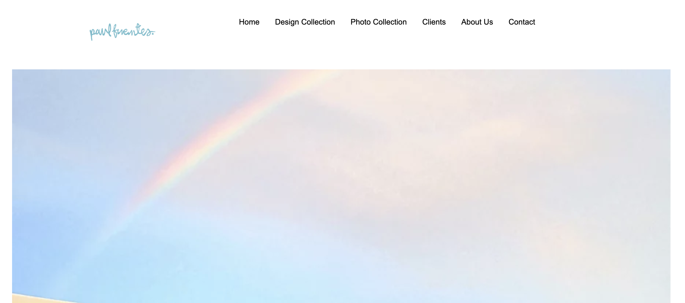
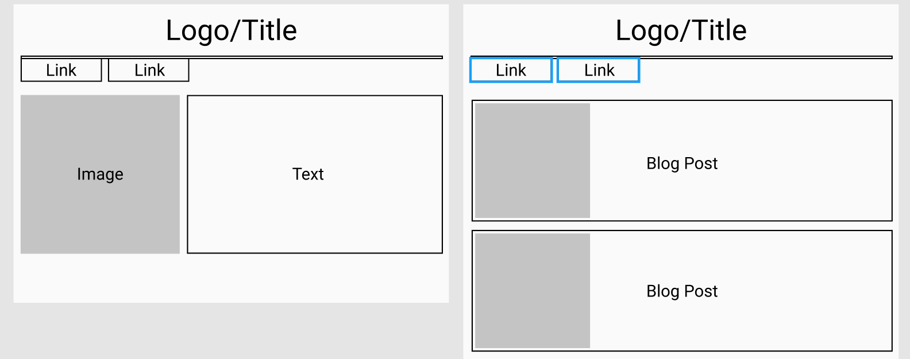
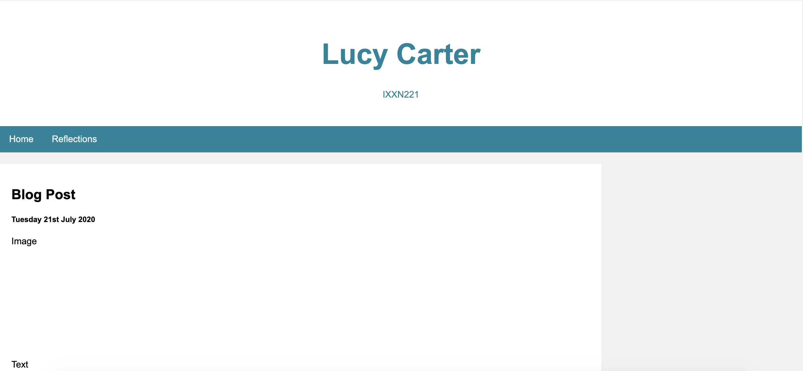
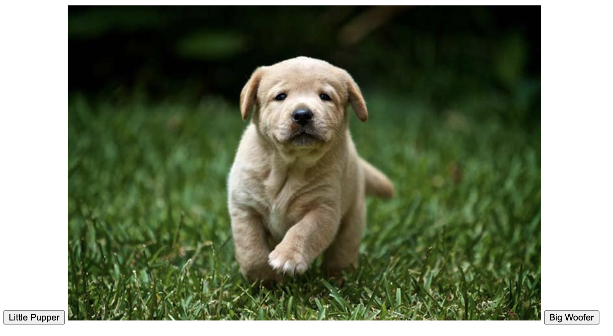
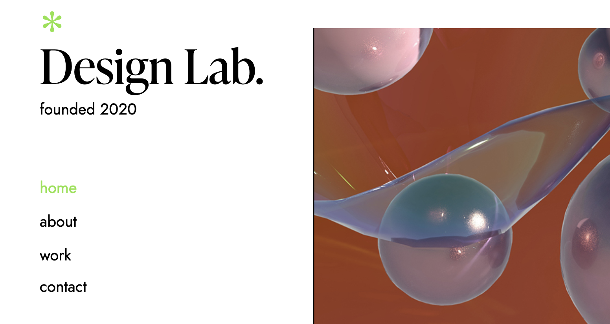
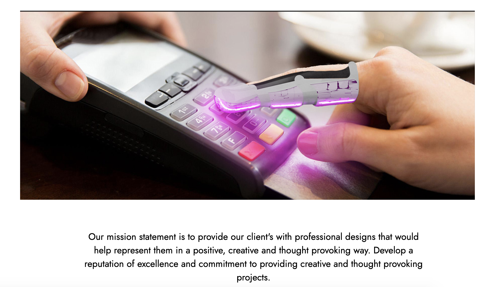
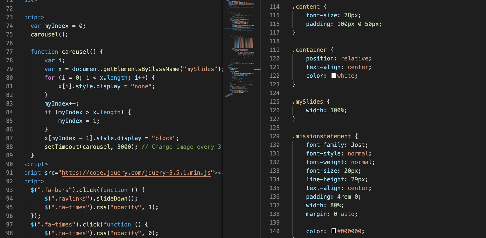

Website Immitation
For this micro-assignment I looked Paul Fuentes Design. I looked at taking a static image and coding that rather that attemping to code an image carousel at this stage. I struggled to center image over text which I am missing.
Blog Wireframes
My wireframes are quite a simple design looking have having a navigation bar at the top of both home and my blog post page.
First Blog Draft
I started by blog layout so it includes a header, nav bar and footer. I'm still unsure as to what content to put on the homepage but on my reflections page I wish to have all my posts in order from oldest to newest so you are able to scroll through them.
Javascript
For my version of a lightbulb turning on and off I made a an option to look at a puppy or grown golden retriever.
Group Website Navigation
For our group website navigation bar I coded the page links to when hovered over top to change to the same green as the icon but when unvisited or selcted them remain black. After coding our groups website nav bar I made the decision to make my personal website nav simular as it looks sleek and refined.
Group Website Carousel
Using javascript fancybox code, I was able to put an image carousel on our website homepage.
Code for Home and Nav Bar
I went through and cleaned up CSS file and added in all the code for mobile website. After figuring out how to code mobile functions for group website I went and added these functions to my personal blog.